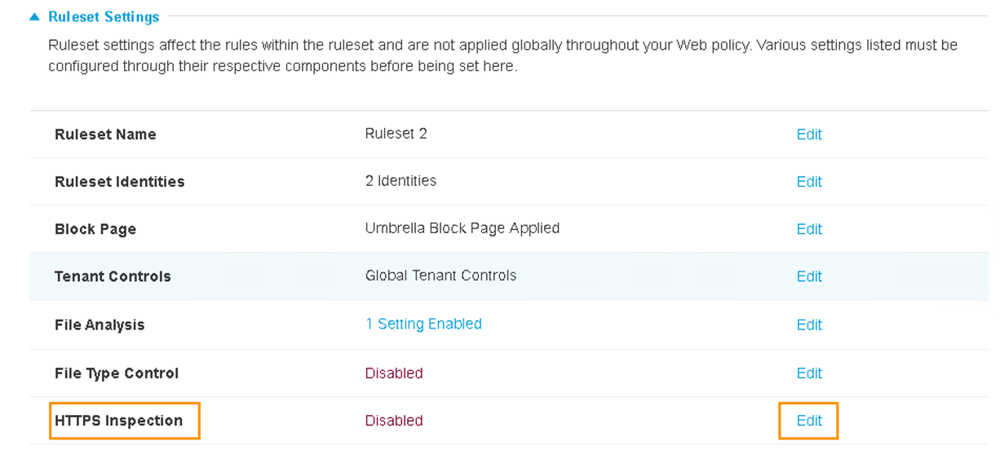
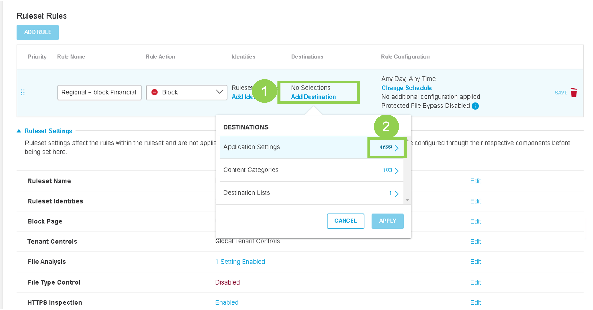

Task 8 - Umbrella Regional Policies
This tasks will walk through the steps to create Web Proxy Policies that will be enforced on Site-100 and Site-400 (i.e., regional sites). These policies will:
* Block web traffic to Financial Institutions
* Block web traffic to additional websites by creating custom destination list
Step 1 - Umbrella Web Policy
In this step we will configure Umbrella Web Policy to block traffic to Financial websites from Regional sites:
-
On the RDP session (jumphost), logon to Umbrella Dashboard by clicking on Google Chrome Browser bookmark named
Umbrella SSO. It will open the Umbrella dashboard and auto-login using single-sign-on. -
Go to Policies > Management > Web Policy and click Add on the top right to add a new Ruleset as shown in below screenshot:

- On the new Ruleset Rules web page, under Ruleset Settings scroll down to Ruleset identities and Click Edit as shown below:
- On the next Ruleset Identities web page, under
All Identitiesscroll down to Tunnels and Click on number 4 with right arrow4 >as shown below:

- On the next page, select the two Tunnels for SITE100 and Click SAVE button as shown below:

| Note: |
|---|
| You must only select SITE100 tunnels. Do not select SITE300 tunnels in this step |
-
On the Ruleset Settings scroll down to HTTPS Inspection section and click Edit 
-
Select Enable HTTPS Inspection, then click Save:

-
After adding the identities, Click ADD RULE button. Give the rule a Name of Regional - block Financial and verify the
Rule ActionisBlock: -
Next click on Edit Identity for this rule. Enable Inherit Ruleset Identities and click Apply as shown in below figure:

-
Further on the new rule, click on Edit Destination and Click on right arrow
>next to Application Settings:  -
Then scroll down to Select Financial Services and hit Apply:
-
On the Rule click on Save icon to save newly added rule:
-
For the Rule 1, click three (
...) dots at the right side and then Enable Rule as shown in below screenshot: -
Confirm by clicking Update

-
Scroll down and click Close

Step 2 - Create Customs-list Web Policy
-
On Umbrella dashboard, navigate to Policy > Policy Component > Destination lists, click Add on the top right corner
- List Name:
Custom-Filter - Destination List type:
Web Proxy(from drop-down menu) - Destination:
www.cnn.com - Click
Add
- Click Save after adding destination/domain:

- List Name:
-
Navigate to Policies > Management >Web Policy and expand on RuleSet 2
-
Click three dots
...and then click Edit
-
Click on Edit Destinations and then on Destiniation Lists
- Click on Customer-Filter and then on Apply

- Click on Save and Close the RuleSet 2

Now the Umbrella policies for regional sites (site-100 and Site-400) have been configured.